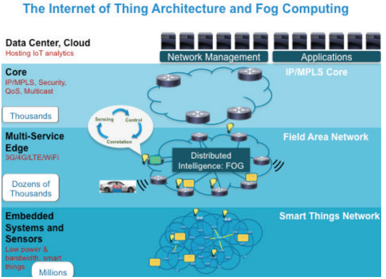

Criterios de evaluación (literal)
3. Identifica sistemas basados en cloud/nube y su influencia en el desarrollo de los sistemas digitales.
a) Se han identificado los diferentes niveles de la cloud/nube.
b) Se han identificado las principales funciones de la cloud/nube (procesamiento de datos, intercambio de información, ejecución de aplicaciones, entre otros).
c) Se ha descrito el concepto de edge computing y su relación con la cloud/nube.
d) Se han definido los conceptos de fog y mist y sus zonas de aplicación en el conjunto.
e) Se han identificado las ventajas que proporciona la utilización de la cloud/nube en los sistemas conectados.
3. Cloud y sistemas conectados.
a) Cloud. Definición y niveles. Cloud computing:
i. Infraestructura como Servicio (Infrastructure as a Service, IaaS).
ii. Plataforma como Servicio (Platform as a Service, PaaS).
iii. Software como Servicio (Software as a Service, SaaS).
b) Posibilidades del trabajo en la cloud.
c) Edge computing y su relación con la cloud.
d) Fog y Mist. Relación con la cloud.
e) Ventajas del uso de los recursos de la cloud:
i. Protección de datos.
ii. Interoperabilidad.
iii. Movilidad.
iv. Trabajo cooperativo.
f) Uso de Cloud y la rentabilidad de la empresa.
Clave para evaluar
Regla del documento: En cada concepto debes encontrar (y saber reproducir):
Definición + Ejemplo real +
Ejemplo DAW + Indicadores.
SaaS
Software
Uso la aplicación ya hecha. Configuro y trabajo.
“uso la app”
PaaS
Plataforma
Subo mi código y la plataforma gestiona el runtime y el escalado.
“subo mi código y me olvido del servidor”
IaaS
Infra
Tengo VMs/red/almacenamiento y administro el sistema.
“yo administro el servidor”
Nota didáctica: WordPress.com es SaaS (hosted). OpenCMS suele ser software que despliegas (PaaS/IaaS),
salvo que un proveedor te lo ofrezca como servicio gestionado.
Vídeo: Desmitificando la Nube
Objetivo: reforzar conceptos clave (IaaS/PaaS/SaaS, funciones cloud y relación cloud↔edge) con un recurso audiovisual.
Vídeo explicativo sobre cloud computing, niveles de servicio (IaaS/PaaS/SaaS) y su relación con edge computing. Duración: 8 minutos.
Ruta usada: video/Desmitificando_la_Nube.mp4 (relativa al HTML).
Diccionario evaluable
Cloud computing (nube)
- Definición (estándar)
- Modelo que permite acceso ubicuo, conveniente y bajo demanda a un conjunto compartido de recursos informáticos configurables, aprovisionables y liberables rápidamente con esfuerzo mínimo de gestión. NIST SP 800-145
- Niveles (modelos de servicio)
-
- IaaS: infraestructura (VMs, red, almacenamiento). El equipo gestiona SO, runtime y despliegue.
- PaaS: plataforma gestionada (runtime, escalado, despliegue). El equipo gestiona código y configuración.
- SaaS: aplicación lista para usar. El usuario configura y utiliza.
- Ejemplo DAW
- Proyecto web típico: SaaS (WordPress.com), PaaS (hosting de frontend/API), y a veces IaaS (VM para aprender administración y despliegue).
- Indicadores evaluables
-
- Clasifica servicios reales como IaaS/PaaS/SaaS y justifica “qué gestiona el proveedor” vs “qué gestiona el equipo”.
- Explica impacto en DAW: despliegue, escalado, seguridad, costes, mantenimiento.
Funciones principales de la cloud
- Definición
- Capacidades típicas que la nube ofrece para soportar sistemas digitales conectados.
- Funciones (mínimo evaluable)
-
- Procesamiento: ejecutar lógica (backend, jobs, colas).
- Intercambio: APIs, mensajería, sincronización, CDN/edge delivery.
- Ejecución: hosting de frontend/backend, autoescalado, balanceo.
- Almacenamiento: ficheros/objetos, BBDD, backups.
- Ejemplo DAW
- App CRUD: Frontend + API + BBDD + Storage (imágenes).
- Indicadores evaluables
- Relaciona ≥3 funciones con componentes concretos de una aplicación web.
Edge computing y relación con la cloud
- Definición
- Computación distribuida que acerca el procesamiento al lugar donde se generan/consumen los datos (cerca del usuario o dispositivo) para reducir latencia y tráfico hacia la nube central. ETSI MEC (marco relacionado)
- Relación cloud ↔ edge
-
- Edge: respuesta rápida, caché, lógica próxima.
- Cloud: almacenamiento masivo, analítica pesada, coordinación global, DevOps.
- Ejemplo
- Frontend servido desde edge (cerca del usuario) y API/BBDD en cloud central.
- Indicadores evaluables
- Explica con un ejemplo por qué edge reduce latencia frente a “todo en cloud”.
Fog y Mist (zonas de aplicación)
- Fog (definición)
- Capa distribuida entre dispositivos y cloud central donde se colocan recursos (cómputo, red y almacenamiento) en nodos intermedios para soportar IoT y baja latencia. NIST SP 500-325
- Mist (definición)
- Capa muy cercana al “thing”: procesamiento ligero en microcontroladores/dispositivos finales o gateways muy próximos (decisiones simples y filtrado). NIST SP 500-325
- Continuo (mist → fog → cloud)
-
- Mist: sensor/microcontrolador (p.ej., ESP32) → decisiones básicas/filtrado.
- Fog: gateway/nodo local → agrega, valida, cachea, protege y opera “cerca”.
- Cloud: histórico, panel web, analítica, CI/CD, escalado.
- Indicadores evaluables
- Define fog y mist y ubica su función en el flujo de datos (mist → fog → cloud).

Figura 1: Arquitectura de capas desde dispositivos (mist) hasta cloud central pasando por fog computing
Fog Computing e IA: marco legal (España/UE) y “mínimos”
Idea clave: Fog/Edge cambia la arquitectura (procesas cerca del dato), pero no “te saca” de obligaciones.
Si hay datos personales o IA con impacto, entran RGPD/LOPDGDD y el marco de IA.
España: seguridad e interoperabilidad
- ENS (RD 311/2022): obligatorio en sector público y muy relevante para proveedores y sistemas conectados (hardening, riesgos, operación segura).
- CCN-CERT (series CCN-STIC, especialmente 800): guías prácticas para implantar ENS (muy útiles si el “fog” es una VM/Raspberry Pi).
- ENI (RD 4/2010): formatos e intercambio; impacto en APIs, datos, metadatos e interoperabilidad.
- RD 203/2021: referencia de funcionamiento electrónico en el sector público.
Datos e IA: cumplimiento esencial
- RGPD (UE 2016/679) + LOPDGDD (LO 3/2018): si hay datos personales (audio/vídeo/identificadores/telemetría vinculable), exige base jurídica, minimización, seguridad y derechos.
- Reglamento Europeo de IA (AI Act): obligaciones por nivel de riesgo (transparencia, control, documentación, etc.).
- AESIA: agencia española de supervisión de la IA (gobernanza nacional).
Checklist DAW (si haces proyecto Fog + IA)
- Clasifica el sistema: ¿IA? ¿datos personales? ¿entorno público?
- Diseña por minimización: procesa lo mínimo en edge/fog y sube solo lo necesario a cloud.
- Seguridad operativa: parches, firewall, segmentación, backups, logs, credenciales (especialmente en gateways fog).
- Documenta: arquitectura mist→fog→cloud + responsabilidades + riesgos + medidas.
Enlaces oficiales recomendados
Ejemplos reales (clasificar y justificar)
Uso en evaluación:
Indicar si es IaaS/PaaS/SaaS o Edge/Fog y justificarlo con “qué gestiona el proveedor” vs “qué gestiona el equipo”.
IaaS
Infraestructura
VMs y recursos base (red/almacenamiento).
“Yo administro el servidor” = IaaS
Hostinger (VPS)
Amazon EC2
Azure Virtual Machines
Google Compute Engine
Raspberry Pi 5 (self-hosted/on-prem)
Ejemplo DAW:
Yo administro el servidor → Nginx/Apache + app + BBDD en VM
(SO y parches).
Herramientas típicas en IaaS:
- Gestión: SSH/Putty, PuTTYgen, WinSCP, FileZilla
- Monitoreo: top, htop, netdata, Prometheus
- Seguridad: iptables, fail2ban, UFW, ClamAV
- Web servers: Nginx, Apache, Caddy
- Orquestación: Terraform, Ansible
PaaS
Plataforma
Subes código; la plataforma gestiona runtime y escalado.
CMS en PaaS (caso típico): la plataforma te da runtime/despliegue/escala y tú mantienes
el CMS y su configuración.
- WordPress / Joomla / OpenCMS / Moodle desplegados sobre plataforma gestionada (p.ej., contenedor o App Service).
- Odoo.sh (PaaS específico para Odoo): despliegue/entornos/CI gestionados, tú gestionas módulos y configuración.
Ejemplo DAW: desplegar API o CMS sin administrar VMs.
Herramientas típicas en PaaS:
- CLI: Heroku CLI, Azure CLI, gcloud, Vercel CLI
- CI/CD: GitHub Actions, GitLab CI, CircleCI
- Configuración: .env, package.json, requirements.txt
- Base de datos: PostgreSQL (gestionado), MongoDB Atlas
- Monitoreo: Datadog, New Relic, Application Insights
SaaS
Software
Aplicación lista para usar (configuras y utilizas).
CMS en SaaS (hosted): el proveedor opera el servicio y tú lo usas/configuras.
- WordPress.com (WordPress como servicio alojado).
- MoodleCloud (Moodle como servicio alojado).
- OpenCMS solo sería SaaS si un proveedor lo ofrece alojado y gestionado (no “por defecto”).
Ejemplo DAW: gestionar un CMS, usuarios, contenidos, roles y permisos sin administrar servidores.
Herramientas típicas en SaaS:
- Desarrollo: GitHub, GitLab, Bitbucket
- Gestión proyectos: Jira, Trello, Asana, ClickUp
- Comunicación: Slack, Microsoft Teams, Discord
- Documentación: Notion, Confluence, Google Docs
- Testing: BrowserStack, LambdaTest
Ejemplos reales de Edge
Edge para web
Lógica cerca del usuario (baja latencia) + entrega/seguridad en el borde.
Ejemplo DAW: caché, seguridad (WAF), rate-limit, personalización en edge.
Edge/Fog para IoT
Software gestionado cerca del dispositivo (gateway) y sincronizado con cloud.
Ejemplo DAW: gateway filtra/valida y cloud guarda histórico/panel web.
Mist
Procesamiento mínimo en el “thing”.
- Ejemplos: ESP32/Arduino/sensores.
- Uso: filtrar, umbrales, eventos “relevantes” antes de fog/cloud.
Ejemplo DAW: enviar solo eventos relevantes a una API.
Evidencias y actividades (alineadas a criterios)
a) Niveles de cloud/nube
📤 Entregable DAW
Tabla con 10 servicios reales clasificados (IaaS/PaaS/SaaS) + enlace.
✅ Indicadores observables
Justifica responsabilidades proveedor vs equipo.
b) Funciones principales de cloud
📤 Entregable DAW
Diagrama de arquitectura (front/API/BBDD/storage) + explicación.
✅ Indicadores observables
Mapea ≥3 funciones a componentes reales.
c) Edge computing y relación con cloud
📤 Entregable DAW
Mini-caso de latencia (edge) + flujo edge→cloud.
✅ Indicadores observables
Explica latencia/tráfico y razonamiento.
d) Fog y Mist + zonas
📤 Entregable DAW
Esquema Mist→Fog→Cloud con 1 ejemplo (gateway + cloud).
✅ Indicadores observables
Ubicación correcta de capas y funciones.
e) Ventajas de cloud
📤 Entregable DAW
Checklist argumentada con ejemplos DAW (repo, despliegue, APIs, acceso remoto).
✅ Indicadores observables
Aplica protección/interoperabilidad/movilidad/cooperación.
| Criterio (literal) | Entregable DAW | Indicadores observables |
|---|---|---|
| a) Niveles de cloud/nube. | Tabla con 10 servicios reales clasificados (IaaS/PaaS/SaaS) + enlace. | Justifica responsabilidades proveedor vs equipo. |
| b) Funciones principales de cloud. | Diagrama de arquitectura (front/API/BBDD/storage) + explicación. | Mapea ≥3 funciones a componentes reales. |
| c) Edge computing y relación con cloud. | Mini-caso de latencia (edge) + flujo edge→cloud. | Explica latencia/tráfico y razonamiento. |
| d) Fog y Mist + zonas. | Esquema Mist→Fog→Cloud con 1 ejemplo (gateway + cloud). | Ubicación correcta de capas y funciones. |
| e) Ventajas de cloud. | Checklist argumentada con ejemplos DAW (repo, despliegue, APIs, acceso remoto). | Aplica protección/interoperabilidad/movilidad/cooperación. |
f) Cloud y rentabilidad (en términos simples)
- Pago por uso: ajusta coste a demanda.
- Menos operación (PaaS/SaaS): menos tiempo en administración.
- Time-to-market: despliegue rápido con CI/CD.
- Control: monitorizar gasto y fijar límites.
Referencias (APA, enlaces oficiales)
- Mell, P., & Grance, T. (2011). The NIST Definition of Cloud Computing (NIST SP 800-145). National Institute of Standards and Technology. https://doi.org/10.6028/NIST.SP.800-145
- Iorga, M., Feldman, L., Barton, R., et al. (2018). Fog Computing Conceptual Model (NIST SP 500-325). National Institute of Standards and Technology. https://doi.org/10.6028/NIST.SP.500-325
- European Telecommunications Standards Institute. (s. f.). Multi-access Edge Computing (MEC). https://www.etsi.org/technologies/multi-access-edge-computing
- Boletín Oficial del Estado. (2022). Real Decreto 311/2022, Esquema Nacional de Seguridad. https://www.boe.es/buscar/act.php?id=BOE-A-2022-7191
- Boletín Oficial del Estado. (2018). Ley Orgánica 3/2018 (LOPDGDD). https://www.boe.es/buscar/act.php?id=BOE-A-2018-16673
- EUR-Lex. (2016). Reglamento (UE) 2016/679 (RGPD). https://eur-lex.europa.eu/eli/reg/2016/679/oj?locale=es
- Boletín Oficial del Estado. (2023). Real Decreto 729/2023 (AESIA). https://www.boe.es/buscar/doc.php?id=BOE-A-2023-18385
- Boletín Oficial del Estado. (2010). Real Decreto 4/2010 (ENI). https://www.boe.es/buscar/act.php?id=BOE-A-2010-1331
Nota: el enlace final del Reglamento Europeo de IA (AI Act) usa ELI en EUR-Lex; si lo necesitas “clavado” en la lista APA,
localízalo en EUR-Lex y sustitúyelo en esta sección.